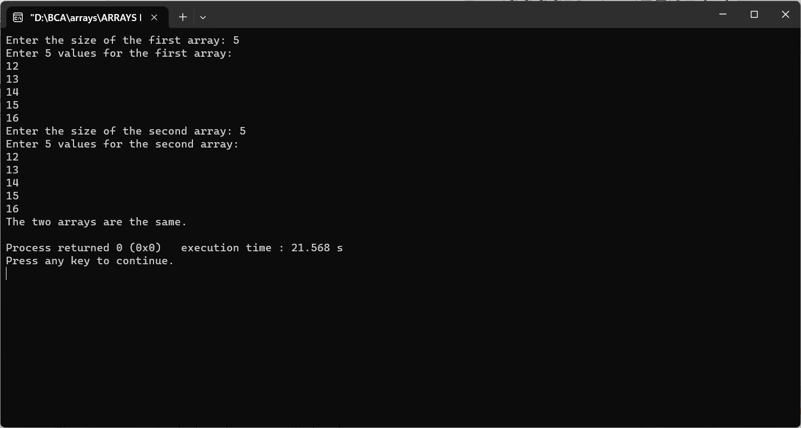

Enter two arrays from the user and check they are same or not
#include
int main() {
int size1, size2;
printf("Enter the size of the first array: ");
scanf("%d", &size1);
int arr1[size1];
printf("Enter %d values for the first array:\n", size1);
for (int i = 0; i < size1; i++) {
scanf("%d", &arr1[i]);
}
printf("Enter the size of the second array: ");
scanf("%d", &size2);
if (size1 != size2) {
printf("The two arrays are not the same (different sizes).\n");
return 0;
}
int arr2[size2];
printf("Enter %d values for the second array:\n", size2);
for (int i = 0; i < size2; i++) {
scanf("%d", &arr2[i]);
}
int areEqual = 1; // Assume the arrays are equal
for (int i = 0; i < size1; i++) {
if (arr1[i] != arr2[i]) {
areEqual = 0; // Set to 0 if a mismatch is found
break; // No need to continue checking
}
}
if (areEqual) {
printf("The two arrays are the same.\n");
} else {
printf("The two arrays are not the same.\n");
}
return 0;
}
